Safe and Stable Execution: CBF–CLF–SOCP Filtering
The layered architecture separates what the formation should do from what each agent may do to achieve it. The sheaf solve answers the first question; this page is about the second. It inserts one small convex program between the planner and the plant, and that program is where collision avoidance, stability, and actuator limits are all expressed.
The pipeline
For every agent, at every control period:
- the sheaf solve computes the harmonic extension $q^*(t)$ and its derivatives, giving each agent a reference slot $r_i$ to track;
- an LQR law plans a nominal command $u_i(x_i)$ that tracks it;
- that nominal command is filtered into a safe and stable $\hat{u}_i(x_i)$;
- the agent moves under $\dot{x}_i = f_i(x_i) + B_i \hat{u}_i(x_i)$.
Step 3 is the subject here. Nothing upstream changes: the planner does not know a filter exists, and the filter does not know how the reference was produced.
How the optimization problem is phrased
The filter never asks "what command should this agent apply?" — the LQR already answered that. It asks a narrower question: what is the closest admissible command to the one proposed? That makes it a projection,
\[\hat{u} \;=\; \arg\min_{u,\;\delta \ge 0} \; \tfrac{1}{2}\|u - u_{\text{nom}}\|^2 \;+\; p\,\delta^2 ,\]
subject to the constraints below, and it means the filter is inert whenever the nominal command is already admissible. Each of the three families contributes constraints of exactly one of two shapes.
Stability becomes one linear row
With tracking error $e = x - r$ and $V = \tfrac{1}{2} e^\top M e$, asking the error to decay exponentially means $\dot{V} \le -c_3 V$. Expanding $\dot{V}$ along $\dot{x} = f + g u$ and moving everything that does not involve $u$ to the right,
\[\underbrace{(g^\top M e)^\top}_{\text{a row of coefficients}} u \;\le\; -c_3 V - e^\top M f + e^\top M \dot{r} - \|M e\| \Delta \;+\; \delta .\]
This row is soft: the slack $\delta \ge 0$ is charged $p\,\delta^2$ in the objective. That is deliberate — if safety and stability ever conflict, something has to give, and it must be stability.
Safety becomes one linear row per neighbour
A barrier $h_{ij} \ge 0$ encodes "far enough from agent $j$". Forward invariance of $\{h \ge 0\}$ follows from $\dot{h}_{ij} \ge -\gamma h_{ij}$, and expanding $\dot{h}$ the same way gives another linear row in $u$. Each pair splits responsibility evenly, so agent $i$ enforces half and needs no agreement with $j$:
\[\underbrace{2\left(g^\top P^\top (P x_i - P x_j)\right)^\top}_{\text{another row}} u \;\ge\; -\tfrac{\gamma}{2} h_{ij} - 2 (P x_i - P x_j)^\top P f + 2\|P x_i - P x_j\|\bar{\Delta} .\]
These rows are hard. They are never relaxed, which is why the program can be infeasible — and why the filter reports that rather than returning an uncertified command.
Actuator limits become a cone
\[\|W u\|_2 \le u_{\max}\]
is not a linear row at all; it is a second-order cone. This is what makes the program an SOCP rather than a QP.
What the solver receives
Collecting these, every instance has the same shape — a quadratic objective, some linear rows, one cone — and is handed to CellularSheaves.IPM in its primal conic form. The three families are independent: each emits rows without consulting the others, and the composer concatenates them. That is what lets every section below switch one family on alone.
using CellularSheaves
using CellularSheaves.Formations
using CellularSheaves.AgentControllers
using CellularSheaves.ControlSheaves.SafetyFilters
using LinearAlgebra
using Plots
using Printf
using Statistics
using BenchmarkToolsA single house style for every figure below
default(framestyle = :box, grid = true, gridalpha = 0.18, gridstyle = :dot,
titlefontsize = 10, guidefontsize = 9, legendfontsize = 8, tickfontsize = 8,
markerstrokewidth = 0, size = (720, 380))
const AGENT_COLOR = :steelblue
const GUIDE_COLOR = :gray80
const BOUND_COLOR = :black:blackThe constraints as geometry
Before any dynamics, it is worth seeing what the three families are. For a single integrator the command is the velocity, so each constraint is a region in the plane of $u$: the two linear rows are half-planes, the actuator limit is a disc, and the filter returns the closest point of their intersection to the nominal command.
plane_model = ControlAffineModel(2)
x_here, x_near, r_goal = [0.0, 0.0], [1.0, 0.35], [2.0, 0.0]
u_proposed = [2.6, 0.0]
d_plane, gamma_plane, rate_plane, cap_plane = 0.9, 1.5, 1.4, 1.6
offset = x_here - x_near
h_plane = dot(offset, offset) - d_plane^2
a_safety, b_safety = 2 .* offset, -(gamma_plane / 2) * h_plane
a_stability = x_here - r_goal
b_stability = -rate_plane * (0.5 * sum(abs2, a_stability))-2.8The boundary of a half-plane aᵀu = b, drawn without assuming it is a function of u₁. The stability row here is exactly vertical, so a y = f(u₁) parameterisation would divide by zero and the line would vanish from the panel.
function halfplane_edge(a, b, reach)
n = a ./ norm(a)
p0 = (b / norm(a)) .* n
d = [-n[2], n[1]]
return ([p0[1] - reach * d[1], p0[1] + reach * d[1]],
[p0[2] - reach * d[2], p0[2] + reach * d[2]])
end
function admissible_panel(title, families)
p = plot(aspect_ratio = 1, xlims = (-3, 3.2), ylims = (-2.6, 2.6),
xlabel = "u₁ (m/s)", ylabel = "u₂ (m/s)", title = title, legend = :bottomleft)
inside = (u1, u2) -> begin
u = [u1, u2]
(!(:safety in families) || dot(a_safety, u) >= b_safety) &&
(!(:stability in families) || dot(a_stability, u) <= b_stability) &&
(!(:actuator in families) || norm(u) <= cap_plane)
end
heatmap!(p, range(-3, 3.2; length = 200), range(-2.6, 2.6; length = 200),
(u1, u2) -> inside(u1, u2) ? 1.0 : 0.0;
c = cgrad([:white, RGBA(0.27, 0.51, 0.71, 0.22)]), colorbar = false)
if :safety in families
plot!(p, halfplane_edge(a_safety, b_safety, 8.0)...;
color = AGENT_COLOR, linewidth = 2, label = "safety aᵀu ≥ b")
end
if :stability in families
plot!(p, halfplane_edge(a_stability, b_stability, 8.0)...;
color = :purple, linewidth = 2, linestyle = :dash, label = "stability aᵀu ≤ b")
end
if :actuator in families
θ = range(0, 2π; length = 160)
plot!(p, cap_plane .* cos.(θ), cap_plane .* sin.(θ); color = :orange,
linewidth = 2, label = "actuator ‖u‖ ≤ u_max")
end
terms = AbstractFilterTerm[]
:stability in families && push!(terms, StabilityTerm(rate = rate_plane, penalty = 1e4))
:safety in families && push!(terms, SafetyTerm(DistanceBarrier(d_plane); gamma = gamma_plane))
:actuator in families && push!(terms, ActuatorTerm(bound = cap_plane))
scatter!(p, [u_proposed[1]], [u_proposed[2]]; markershape = :circle, markersize = 10,
markercolor = :white, markerstrokecolor = BOUND_COLOR, markerstrokewidth = 2,
label = "u_nom")
if !isempty(terms)
res = safety_filter(Tuple(terms),
FilterContext(plane_model, x_here, r_goal, 2; others = [x_near]),
u_proposed)
if res.certified
plot!(p, [u_proposed[1], res.command[1]], [u_proposed[2], res.command[2]];
color = GUIDE_COLOR, linewidth = 1, arrow = true, label = false)
scatter!(p, [res.command[1]], [res.command[2]]; color = BOUND_COLOR,
marker = :star5, markersize = 6, label = "û")
end
end
return p
end
plot(admissible_panel("Safety Only", [:safety]),
admissible_panel("Stability Only", [:stability]),
admissible_panel("Actuator Only", [:actuator]),
admissible_panel("All Three", [:safety, :stability, :actuator]);
layout = (2, 2), size = (900, 840))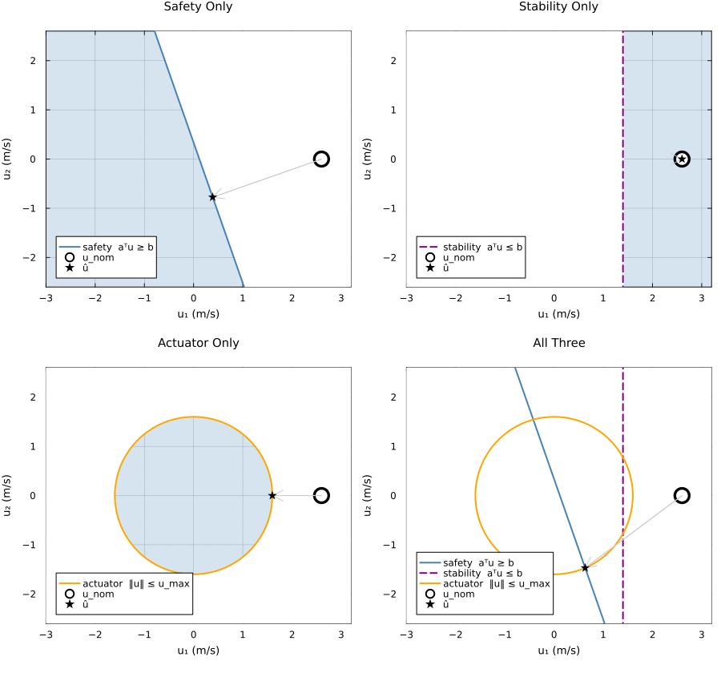
The open ring is the proposed command and the star is what the filter returns, so the two coincide exactly when the proposal was already admissible and the filter did nothing. That is the stability panel: the proposal sits well inside the half-plane its row asks for, the row is slack, and the star lands inside the ring.
The last panel shows the priority order rather than a violation. Shading marks where all the drawn constraints hold at once, and in that panel there is none to see: within this window the safety half-plane and the stability half-plane do not intersect. Something has to give, and the returned command lands on the safety boundary and inside the cone while sitting on the far side of the dashed line — outside the stability half-plane. That is the soft row being relaxed so the two hard families can both be met, which is the whole design in one picture.
A plant where all three families act on the same command
The demonstrations that follow use two double integrators, because there every family reaches the command directly and so each can be shown in isolation.
Note the CLF metric. With $M = I$ the stability row reads $L_g V = g^\top e$, which for a double integrator is the velocity error alone and vanishes at rest — the row goes vacuous while still demanding $-c_3 V$. Taking the metric from the closed-loop Lyapunov equation removes that degeneracy and makes the nominal command itself a feasible witness for the row, so the filter deviates from it only when safety or the cone requires.
const DT, STEPS, AMAX, DSAFE = 0.01, 900, 2.0, 0.5
pair_model = double_integrator_model(2)
A_pair = [0 0 1 0; 0 0 0 1; 0 0 0 0; 0 0 0 0.0]
B_pair = [0 0; 0 0; 1 0; 0 1.0]
K_pair = [1.0 0 1.8 0; 0 1.0 0 1.8]
M_pair = lyapunov_metric(A_pair, B_pair, K_pair)
stability = StabilityTerm(metric = M_pair, rate = 0.9 * lyapunov_rate(M_pair), penalty = 1e3)
safety = SafetyTerm(BrakingBarrier(DSAFE, AMAX); gamma = 3.0, sense = 6.0)
actuator = ActuatorTerm(bound = AMAX)
@printf("the Lyapunov metric certifies a decay rate up to c₃ = %.3f\n", lyapunov_rate(M_pair))the Lyapunov metric certifies a decay rate up to c₃ = 0.596
Two agents are told to exchange positions, which drives them straight at one another unless something intervenes. The rollout is recorded as a FilterRollout, which the plotting recipes below consume.
function swap(terms; label, speed = 1.2, cap = Inf, sep_floor = DSAFE)
xs = [[-2.0, -0.12, 0.0, 0.0], [2.0, 0.12, 0.0, 0.0]]
refs = [[2.0, -0.12, 0.0, 0.0], [-2.0, 0.12, 0.0, 0.0]]
positions = zeros(STEPS, 2, 2)
separation, command, lyapunov = zeros(STEPS), zeros(STEPS), zeros(STEPS)
slack = zeros(STEPS)
active = falses(STEPS)
at_cap, relaxed, contended, uncertified, total = 0, 0, 0, 0, 0
for k in 1:STEPS
us = Vector{Vector{Float64}}(undef, 2)
cap_here, relax_here = false, false
for i in 1:2
nominal = speed .* (refs[i][1:2] - xs[i][1:2]) - 1.6 .* xs[i][3:4]
if isempty(terms)
us[i] = nominal
else
ctx = FilterContext(pair_model, xs[i], refs[i], 2; others = [xs[3 - i]])
res = safety_filter(terms, ctx, nominal)
us[i] = res.certified ? res.command : zeros(2)
total += 1
res.certified || (uncertified += 1)
isfinite(res.cbf_residual) && res.cbf_residual < 1e-6 && (active[k] = true)
if res.certified
isfinite(res.cap_residual) && res.cap_residual < 1e-6 && (cap_here = true)
res.slack > 1e-2 && (relax_here = true)
slack[k] = max(slack[k], res.slack)
end
end
positions[k, i, :] = xs[i][1:2]
end
cap_here && (at_cap += 1)
relax_here && (relaxed += 1)
(active[k] && cap_here && relax_here) && (contended += 1)
separation[k] = norm(xs[1][1:2] - xs[2][1:2])
command[k] = maximum(norm, us)
lyapunov[k] = maximum(0.5 * dot(xs[i] - refs[i], M_pair * (xs[i] - refs[i]))
for i in 1:2)
for i in 1:2
xs[i] = xs[i] + DT .* vcat(xs[i][3:4], us[i])
end
end
roll = FilterRollout(DT .* (1:STEPS), positions; separation = separation,
command = command, lyapunov = lyapunov, slack = slack,
barrier_active = active, separation_floor = sep_floor,
command_cap = cap, label = label)
return (rollout = roll, barrier = count(active), at_cap = at_cap, relaxed = relaxed,
contended = contended, uncertified = uncertified, total = total)
endswap (generic function with 1 method)Safety on its own
Only the barrier rows are active here — no stability row, no cone. Each agent is drawn with half the keep-out radius, so the two discs touch exactly at contact distance.
unfiltered = swap((); label = "Unfiltered").rollout
safety_only = swap((safety,); label = "Safety Only").rollout
animate_filter_rollout(unfiltered, safety_only; filename = "cbfclf_safety.gif",
frame_step = 8, fps = 20, mode = :safety)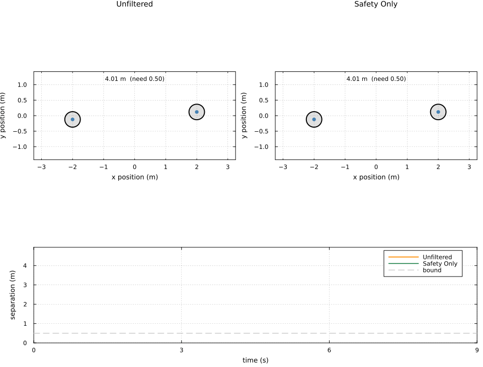
plot(unfiltered, :separation; label = "unfiltered", color = :orange, legend = :bottomright)
plot!(safety_only, :separation; label = "safety only", color = AGENT_COLOR)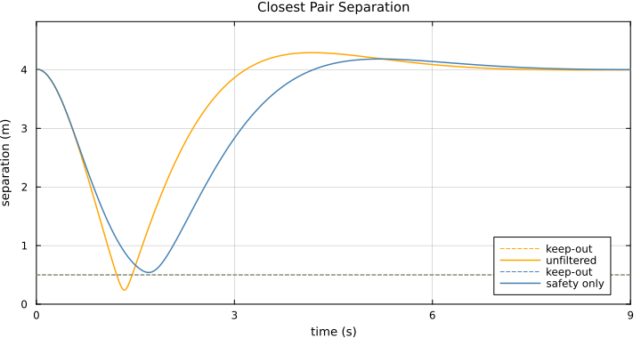
Stability on its own
Stability is harder to see than collision avoidance, so the nominal policy here is one that genuinely fails: the correct LQR gain with its sign flipped on the roll channel, a plausible implementation fault rather than a contrivance. Left to itself it diverges.
It also separates the two stability rows. StabilityTerm imposes the continuous inequality $\dot{V} \le -c_3 V$ at each sample, which says nothing about where an explicit step of length $\Delta t$ actually lands. Against a benign nominal that gap is invisible; against this one it dominates, and the filter goes on certifying step after step of a trajectory that is already running away — see the count printed below, which ends only because the state eventually grows large enough that the solve itself fails, not because the row ever objects. DiscreteStabilityTerm instead constrains the successor state directly, $V(A_d e + B_d u) \le (1 - c_3\Delta t) V(e)$ for the tracking error $e = x - r$, which is a second-order cone on $L(A_d e + B_d u)$ and holds at the rate the system actually runs at.
const QDT = 0.05
quad = QuadrotorDynamics()
Ad_quad, Bd_quad = discrete_matrices(quad, QDT)
Q_quad = Matrix(Diagonal([500.0, 500.0, 500.0, 150.0, 150.0, 100.0, 100.0, 100.0, 5.0, 5.0]))
R_quad = Matrix(Diagonal([0.005, 0.005, 0.005]))
K_quad = LQRController(quad, QDT, Q_quad, R_quad).K
M_quad = lyapunov_metric(quad, K_quad)
c3_quad = lyapunov_rate(M_quad)
quad_model = ControlAffineModel(quad)
K_faulty = copy(K_quad)
K_faulty[2, :] .*= -1
continuous_terms = (StabilityTerm(metric = M_quad, rate = 0.5 * c3_quad, penalty = 1e4),
ActuatorTerm(bound = 60.0))
discrete_terms = (DiscreteStabilityTerm(Ad = Ad_quad, Bd = Bd_quad, metric = M_quad,
dt = QDT, rate = 0.5 * c3_quad),
ActuatorTerm(bound = 60.0))
function faulty_rollout(terms; label, steps = 260)
x, ref = vcat(0.4, -0.3, 0.2, zeros(7)), zeros(10)
positions, lyapunov, command = zeros(steps, 1, 2), zeros(steps), zeros(steps)
attitude = zeros(steps, 1, 2)
certified = 0
stopped = steps # where the run actually ended
for k in 1:steps
u = -K_faulty * x
if terms !== nothing
res = safety_filter(terms, FilterContext(quad_model, x, ref, 3), u)
if res.certified
u = res.command
certified += 1
end
end
positions[k, 1, :] = x[1:2]
attitude[k, 1, :] = x[4:5]
lyapunov[k] = 0.5 * dot(x - ref, M_quad * (x - ref))
command[k] = norm(u)
x = Ad_quad * x + Bd_quad * u
if norm(x) > 1e4
for m in (k + 1):steps
positions[m, 1, :] = positions[k, 1, :]
attitude[m, 1, :] = attitude[k, 1, :]
lyapunov[m] = lyapunov[k]
end
stopped = k
break
end
end
roll = FilterRollout(QDT .* (1:steps), positions; separation = fill(Inf, steps),
command = command, lyapunov = lyapunov,
attitude = attitude[:, :, 1], label = label)
return (rollout = roll, certified = certified, steps = steps, stopped = stopped,
positions = positions)
end
faulty_bare = faulty_rollout(nothing; label = "Faulty Gain, Unfiltered")
faulty_cont = faulty_rollout(continuous_terms; label = "Continuous Stability Row")
faulty_disc = faulty_rollout(discrete_terms; label = "Discrete Stability Row")
@printf("faulty gain, unfiltered: ‖x‖ grows without bound\n")
@printf("continuous row: certified %3d steps, ran %3d before diverging past the solver\n",
faulty_cont.certified, faulty_cont.stopped)
@printf("discrete row: certified %3d steps, ran %3d and converges\n",
faulty_disc.certified, faulty_disc.stopped)faulty gain, unfiltered: ‖x‖ grows without bound
continuous row: certified 83 steps, ran 87 before diverging past the solver
discrete row: certified 260 steps, ran 260 and converges
The fault is on the roll channel, so the airframe is drawn tilted by its roll angle: under the continuous row it turns over completely and flies out of frame, while under the discrete row it settles level. The frame is held fixed at a scale that keeps the converging agent legible, so the diverging one simply leaves it. Beneath is the Lyapunov function each row is supposed to be dissipating, on a logarithmic axis — the two end nearly seven orders of magnitude apart, and on a linear axis the converging one would be indistinguishable from zero.
animate_filter_rollout(faulty_cont.rollout, faulty_disc.rollout;
filename = "cbfclf_stability.gif", frame_step = 2, fps = 20,
mode = :stability, limits = ((-1.6, 1.6), (-1.6, 1.6)))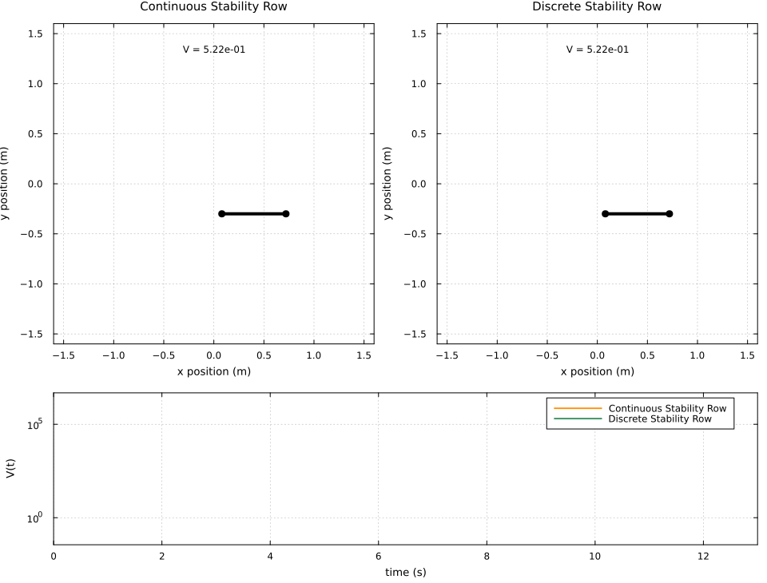
The unfiltered policy for reference: the continuous row tracks its divergence almost exactly, because it is satisfied at every sample and satisfied is not the same as sufficient.
plot(faulty_bare.rollout.times, max.(faulty_bare.rollout.lyapunov, 1e-8); color = :orange,
linewidth = 1.5, yscale = :log10, label = "unfiltered", xlabel = "time (s)",
ylabel = "V(t)", title = "Tracking Lyapunov Function", legend = :right)
plot!(faulty_cont.rollout.times, max.(faulty_cont.rollout.lyapunov, 1e-8); color = :purple,
linewidth = 1.5, linestyle = :dash, label = "continuous row")
plot!(faulty_disc.rollout.times, max.(faulty_disc.rollout.lyapunov, 1e-8);
color = AGENT_COLOR, linewidth = 1.5, label = "discrete row")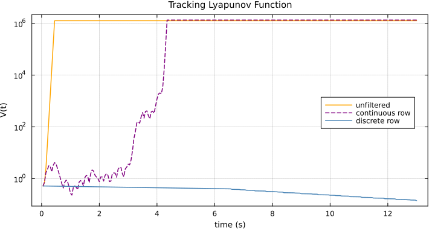
Actuator limits on its own
The same exchange, commanded far harder. Without the cone the demanded magnitude spikes; with it, the command flattens against the ceiling and the manoeuvre simply takes longer.
hard_uncapped = swap((); label = "No Actuator Bound", speed = 3.0).rollout
hard_capped = swap((actuator,); label = "‖u‖ ≤ u_max", speed = 3.0, cap = AMAX).rollout
animate_filter_rollout(hard_uncapped, hard_capped; filename = "cbfclf_actuator.gif",
frame_step = 8, fps = 20, mode = :actuator)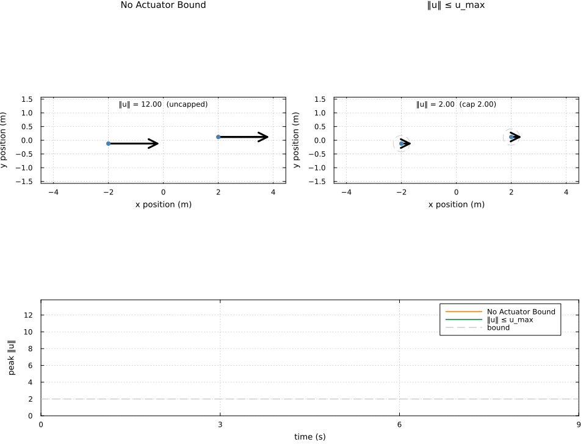
Composition
The three families are independent, so any subset can be enforced. Safety is what keeps the separation above its floor, the cone is what keeps the command under its cap, and enforcing all three preserves both — which is the claim the architecture rests on.
The stability row reads as doing nothing here, and that is the correct behaviour rather than an omission: the nominal law in this scenario already dissipates faster than the rate demanded of it, so the row is satisfied by the nominal and the filter returns it untouched to within $10^{-6}$. A stability row only acts when the nominal is not already stabilising, which is what the faulty-gain demonstration above shows. The two rates are printed rather than quoted, so the claim cannot drift away from the parameters above.
let x0 = [-2.0, -0.12, 0.0, 0.0], r0 = [2.0, -0.12, 0.0, 0.0]
nominal = 1.2 .* (r0[1:2] - x0[1:2]) - 1.6 .* x0[3:4]
e0 = x0 - r0
V0 = 0.5 * dot(e0, M_pair * e0)
achieved = dot(M_pair * e0, A_pair * x0 + B_pair * nominal)
@printf("at the initial state the nominal law achieves V̇ = %.2f, against the %.2f\n",
achieved, -0.9 * lyapunov_rate(M_pair) * V0)
@printf("demanded by the stability row — so the row is already satisfied\n")
end
function report(label, terms)
run = swap(terms; label = label)
roll = run.rollout
reached = norm(roll.positions[end, 1, :] - [2.0, -0.12])
@printf("%-18s %5.3f %-9s %5.3f %-9s %5.3f | %4d %4d %4d | %d/%d\n",
label, minimum(roll.separation),
minimum(roll.separation) >= DSAFE - 1e-3 ? "(safe)" : "(COLLIDE)",
maximum(roll.command),
maximum(roll.command) <= AMAX + 1e-6 ? "(in cap)" : "(OVER)",
reached, run.barrier, run.at_cap, run.relaxed, run.uncertified, run.total)
end
@printf("keep-out %.2f m, actuator bound %.2f\n", DSAFE, AMAX)
@printf("the three counts are the steps on which each family acted: a barrier row was\n")
@printf("tight, the cone was tight, and the stability relaxation was open\n\n")
@printf("%-18s %-15s %-15s %5s | %4s %4s %4s | %s\n\n",
"", "min sep", "peak ‖u‖", "err", "cbf", "cap", "δ>0", "uncert")
report("no filter", ())
report("stability only", (stability,))
report("safety only", (safety,))
report("actuator only", (actuator,))
report("safety + actuator", (safety, actuator))
report("all three", (stability, safety, actuator))at the initial state the nominal law achieves V̇ = -9.60, against the -6.24
demanded by the stability row — so the row is already satisfied
keep-out 0.50 m, actuator bound 2.00
the three counts are the steps on which each family acted: a barrier row was
tight, the cone was tight, and the stability relaxation was open
min sep peak ‖u‖ err | cbf cap δ>0 | uncert
no filter 0.240 (COLLIDE) 4.800 (OVER) 0.004 | 0 0 0 | 0/0
stability only 0.240 (COLLIDE) 4.800 (OVER) 0.004 | 0 0 0 | 0/1800
safety only 0.541 (safe) 4.800 (OVER) 0.003 | 118 0 0 | 0/1800
actuator only 0.240 (COLLIDE) 2.000 (in cap) 0.005 | 0 70 0 | 0/1800
safety + actuator 0.538 (safe) 2.000 (in cap) 0.002 | 112 65 0 | 0/1800
all three 0.538 (safe) 2.000 (in cap) 0.002 | 112 65 20 | 0/1800
The activity counts are where the composition claim is actually settled, and they say something the outcome columns alone do not.
Stability is inert alone and yields only in composition. On its own the row never opens: the nominal law already dissipates faster than it demands, as the two rates printed above show. Add the barrier and the cone and the same row opens on a handful of steps — nothing about the stability term changed, only what the other two families left achievable. That is the designed priority order caught in the act: when the three cannot be had at once, the soft row is the one that gives, and it gives by exactly the relaxation it is charged for.
No single step of that run has all three acting at once, but that is a property of this encounter rather than of the architecture. The cone binds during the opening transient, while the tracking error is still large and the demanded command exceeds the bound. The barrier binds later, at closest approach, by which time the error has shrunk enough that the command has dropped back inside the cone. The two windows end up adjacent rather than overlapping, and the relaxation closes before either of them matters.
The composition guarantee the table does establish is the useful one: adding a family never costs a guarantee already held, and the last row keeps both the separation floor and the command cap that the single-family rows keep individually. But it is worth seeing the three genuinely contend, which is what the next section arranges.
When all three contend
Only one quantity changes here: the keep-out widens from the value used above. That is enough, because it decides when the barrier engages. A wider keep-out brings the barrier forward into the interval where the command is still pinned against the cone, and the deflection it then demands is large enough that the commanded decay rate is no longer attainable — so the stability row is relaxed at the same instants. The rate and the actuator bound are the ones used throughout; nothing is tuned to force the outcome.
const CONTESTED_FLOOR = 1.0
contested = swap((stability,
SafetyTerm(BrakingBarrier(CONTESTED_FLOOR, AMAX); gamma = 3.0, sense = 6.0),
actuator);
label = "All Three Contending", cap = AMAX, sep_floor = CONTESTED_FLOOR)
cbf_on = contested.rollout.barrier_active
cone_on = contested.rollout.saturated
relax_on = contested.rollout.slack .> 1e-2
all_on = cbf_on .& cone_on .& relax_on
@printf("min separation %.3f (floor %.3f) peak ‖u‖ %.3f (cap %.3f)\n",
minimum(contested.rollout.separation), CONTESTED_FLOOR,
maximum(contested.rollout.command), AMAX)
@printf("steps with a barrier row tight %4d\n", count(cbf_on))
@printf("steps with the cone tight %4d\n", count(cone_on))
@printf("steps with the relaxation open %4d (counted as δ > 1e-2)\n", count(relax_on))
@printf("steps with all three at once %4d of %d\n", count(all_on), STEPS)
@printf("uncertified solves %4d of %d\n",
contested.uncertified, contested.total)min separation 1.001 (floor 1.000) peak ‖u‖ 2.000 (cap 2.000)
steps with a barrier row tight 132
steps with the cone tight 75
steps with the relaxation open 47 (counted as δ > 1e-2)
steps with all three at once 17 of 900
uncertified solves 0 of 1800
The encounter itself, against the same run with no filter at all. Each agent carries half the keep-out radius, so the discs touch exactly at contact, and the arrow is the command it is being given, drawn against the dashed circle of radius $u_{\max}$. On the left the unfiltered pair drives straight through one another: the discs overlap and the frame turns red as the separation falls below the floor. On the right both bounds hold at once — the discs stay clear while the command sits exactly on its cap through the encounter, which is the arrow reaching the dashed circle and going no further. The raster beneath tracks which family is acting, and shades the window in which all three are.
contested_bare = swap((); label = "Unfiltered", cap = AMAX, sep_floor = CONTESTED_FLOOR)
animate_filter_rollout(contested_bare.rollout, contested.rollout;
filename = "cbfclf_contended.gif", frame_step = 8, fps = 20,
mode = :contended)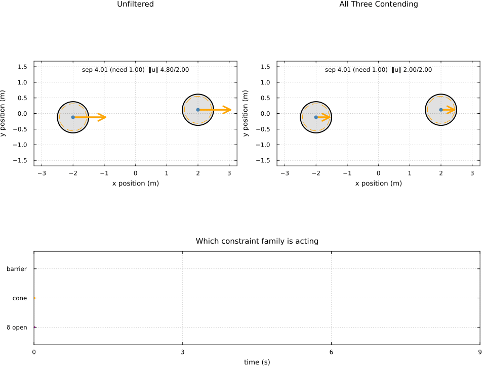
Contention is a brief event rather than a regime — a small fraction of the run, which is what a transient encounter should look like. What matters is what happens across it: both hard guarantees hold throughout, with the separation resting on its floor and the command resting on its cap, while the soft row absorbs the difference.
plot(plot(contested.rollout, :separation), plot(contested.rollout, :command);
layout = (1, 2), size = (900, 340))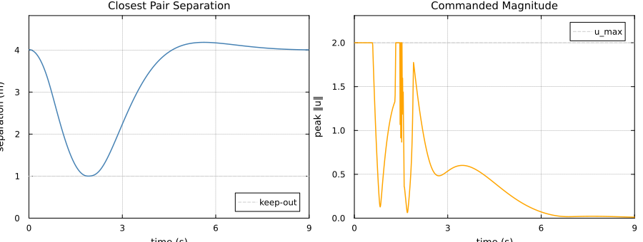
The escort mission
Six heterogeneous quadrotors escort a circling target while an obstacle crosses the formation. Two things differ from the double integrators above, and both are consequences of the plant rather than of the method.
First, $P B = 0$ for a quadrotor: rotor moments reach the translational coordinates only through the attitude loop, so a configuration barrier has relative degree two vertically and four horizontally, and a plain barrier row against the rotor command is vacuous. The filter reports this as a RelativeDegreeError rather than returning something uncertified. Collision avoidance therefore acts on a reference governor — a virtual reference obeying $\dot{r} = v$, which is a single integrator and so has relative degree one — while the ISS-CLF row and the actuator cone act on the rotor command itself, exactly at step 3 of the pipeline.
Second, safety is certified for the reference; it transfers to the physical state through the tracking error, which is why the governor works to an inflated radius.
const NA, TV, D, EDT, ESTEPS, R_RING = 6, 7, 4, 0.05, 240, 0.6
const D_SAFE, OBS_RADIUS, OBS_SPEED, TRACK_MARGIN, GOV_SPEED = 0.15, 0.25, 0.35, 0.06, 1.4
sheaf = build_escort_ring(NA, TV, R_RING; observers = [1])
target_pos(node, t) = [0.5cos(0.5t), 0.5sin(0.5t), 1.5 + 0.1sin(1.0t), 1.0]
target_vel(node, t) = [-0.25sin(0.5t), 0.25cos(0.5t), 0.1cos(1.0t), 0.0]
obstacle_at(t) = [1.6 - OBS_SPEED * t, 0.62, 1.5]
H_blocks, L_IB = restricted_laplacian_blocks(sheaf, collect(1:NA), [TV])
H = Matrix(H_blocks)
L_IB = Matrix(L_IB)
harmonic(t) = H \ (-L_IB * target_pos(TV, t))
harmonic_rate(t) = H \ (-L_IB * target_vel(TV, t))
slot(i) = ((i - 1) * D + 1):(i * D)
Q_lqr = Matrix(Diagonal([500.0, 500.0, 500.0, 150.0, 150.0, 100.0, 100.0, 100.0, 5.0, 5.0]))
R_lqr = Matrix(Diagonal([0.005, 0.005, 0.005]))
dyns = [QuadrotorDynamics(m = 0.5 + 0.05i, Ixx = 0.01 + 0.002i, Iyy = 0.01 + 0.002i)
for i in 1:NA]
gains = [LQRController(dyns[i], EDT, Q_lqr, R_lqr).K for i in 1:NA]
metrics = [lyapunov_metric(dyns[i], gains[i]) for i in 1:NA]
rates = [lyapunov_rate(metrics[i]) for i in 1:NA]
keep_out = D_SAFE + OBS_RADIUS
governor_params = CBFCLFParams(d_safe = D_SAFE + TRACK_MARGIN, obstacle_radius = OBS_RADIUS,
gamma = 4.0, sense = 2.0, clf_rate = 3.0, clf_penalty = 1.0,
actuator_cap = GOV_SPEED)
governor_model = ControlAffineModel(3)
function escort(; safety_on::Bool, actuator_cap::Float64 = Inf, label = "")
start = [initial_state(dyns[i], harmonic(0.0)[slot(i)][1:3],
harmonic_rate(0.0)[slot(i)][1:3]) for i in 1:NA]
agents = [AgentState(start[i], dyns[i], EDT, gains[i], 0.02; use_velocity = true)
for i in 1:NA]
controllers = [CBFCLFController(gains[i],
CBFCLFParams(actuator_cap = actuator_cap,
clf_metric = metrics[i],
clf_rate = 0.9 * rates[i]),
ControlAffineModel(dyns[i])) for i in 1:NA]
refs = [harmonic(0.0)[slot(i)][1:3] for i in 1:NA]
no_neighbours = Vector{Vector{Float64}}()
positions = zeros(ESTEPS, NA, 3)
command, clearance = zeros(ESTEPS), fill(Inf, ESTEPS)
separation, lyapunov, slack = fill(Inf, ESTEPS), zeros(ESTEPS), zeros(ESTEPS)
lyapunov_agent, slack_agent = zeros(ESTEPS, NA), zeros(ESTEPS, NA) # per agent, not maxed
active = falses(ESTEPS)
gov_ok, gov_n, agent_ok, agent_n = 0, 0, 0, 0
for k in 1:ESTEPS
t = k * EDT
goals = [harmonic(t)[slot(i)][1:3] for i in 1:NA]
rates_t = [harmonic_rate(t)[slot(i)][1:3] for i in 1:NA]
if safety_on
nominal = [rates_t[i] + 4.0 .* (goals[i] - refs[i]) for i in 1:NA]
gov = safety_filter_all(governor_params, governor_model, nominal, refs, goals;
ref_velocities = rates_t, obstacles = [obstacle_at(t)],
obstacle_velocities = [[-OBS_SPEED, 0.0, 0.0]])
velocities = [gov[i].certified ? gov[i].command : zeros(3) for i in 1:NA]
active[k] = any(isfinite(r.cbf_residual) && r.cbf_residual < 1e-6 for r in gov)
gov_ok += count(r -> r.certified, gov)
gov_n += NA
for i in 1:NA
refs[i] = refs[i] + EDT .* velocities[i]
end
else
refs = goals
velocities = rates_t
end
for i in 1:NA
if safety_on
_, _, res = step_agent!(agents[i], controllers[i], refs[i], no_neighbours,
EDT; qstar_dot_target = velocities[i])
lyapunov[k] = max(lyapunov[k], res.lyapunov)
slack[k] = max(slack[k], isfinite(res.slack) ? res.slack : 0.0)
lyapunov_agent[k, i] = res.lyapunov
slack_agent[k, i] = isfinite(res.slack) ? res.slack : 0.0
res.certified && (command[k] = max(command[k], norm(res.command)))
agent_ok += res.certified ? 1 : 0
agent_n += 1
else
_, x_ref = step_agent!(agents[i], refs[i], velocities[i], EDT)
deviation = agents[i].x - x_ref
lyapunov[k] = max(lyapunov[k], 0.5 * dot(deviation, metrics[i] * deviation))
command[k] = max(command[k], norm(gains[i] * deviation))
end
positions[k, i, :] = agents[i].x[1:3]
clearance[k] = min(clearance[k], norm(agents[i].x[1:3] - obstacle_at(t)))
end
separation[k] = minimum(norm(positions[k, i, :] - positions[k, j, :])
for i in 1:NA for j in (i + 1):NA)
end
roll = FilterRollout(EDT .* (1:ESTEPS), positions; separation = separation,
clearance = clearance, command = command, lyapunov = lyapunov,
slack = slack, barrier_active = active,
separation_floor = D_SAFE, keep_out = keep_out,
command_cap = actuator_cap, label = label)
return (rollout = roll, gov_ok = gov_ok, gov_n = gov_n, agent_ok = agent_ok,
agent_n = agent_n, lyapunov_agent = lyapunov_agent, slack_agent = slack_agent)
endescort (generic function with 1 method)The actuator cap must bind, or its panel says nothing, and it must leave the agents able to follow the deflected reference, or the reference certificate stops transferring to the physical state. The demand is heavily tailed — evading the obstacle costs a brief spike of many times the median effort — so the cap is drawn from a high percentile of the unconstrained filtered demand rather than from the nominal orbit.
baseline = escort(safety_on = false, label = "Unfiltered LQR")
unconstrained = escort(safety_on = true)
demand = sort(unconstrained.rollout.command)
CAP = demand[round(Int, 0.98 * length(demand))]
filtered = escort(safety_on = true, actuator_cap = CAP, label = "CBF–CLF–SOCP Filtered")
@printf("peak demand: unfiltered %.3f, filtered %.3f; cap %.3f\n\n",
maximum(baseline.rollout.command), maximum(unconstrained.rollout.command), CAP)
verdict(v, bound) = v < bound ? "VIOLATED" : "ok"
@printf("obstacle keep-out %.3f, agent separation %.3f\n", keep_out, D_SAFE)
@printf("min agent-obstacle unfiltered %.3f %s\n", minimum(baseline.rollout.clearance),
verdict(minimum(baseline.rollout.clearance), keep_out))
@printf("min agent-obstacle filtered %.3f %s\n", minimum(filtered.rollout.clearance),
verdict(minimum(filtered.rollout.clearance), keep_out))
@printf("min agent-agent filtered %.3f %s\n", minimum(filtered.rollout.separation),
verdict(minimum(filtered.rollout.separation), D_SAFE))
@printf("peak command / cap %.3f / %.3f\n",
maximum(filtered.rollout.command), CAP)
@printf("certified governor solves %d / %d\n", filtered.gov_ok, filtered.gov_n)
@printf("certified agent solves %d / %d\n", filtered.agent_ok, filtered.agent_n)peak demand: unfiltered 0.280, filtered 4.260; cap 1.086
obstacle keep-out 0.400, agent separation 0.150
min agent-obstacle unfiltered 0.128 VIOLATED
min agent-obstacle filtered 0.416 ok
min agent-agent filtered 0.356 ok
peak command / cap 1.086 / 1.086
certified governor solves 1440 / 1440
certified agent solves 1440 / 1440
The two layers are counted separately on purpose. Collision avoidance lives entirely in the governor, so a governor solve that failed to certify would be a safety-relevant event, while an agent solve that failed costs tracking accuracy on one period. Pooling them would hide that distinction behind a single reassuring ratio. Here the governor certifies every solve, and the handful of agent solves that do not are the ones discussed under "When the filter cannot certify" below: step_agent! applies the unfiltered nominal command on those periods, which is why the certified count is worth printing next to the clearance and the cap rather than tucked away.
animate_filter_rollout(baseline.rollout, filtered.rollout; filename = "cbfclf_escort.gif",
frame_step = 3, fps = 18, obstacle = obstacle_at, mode = :safety)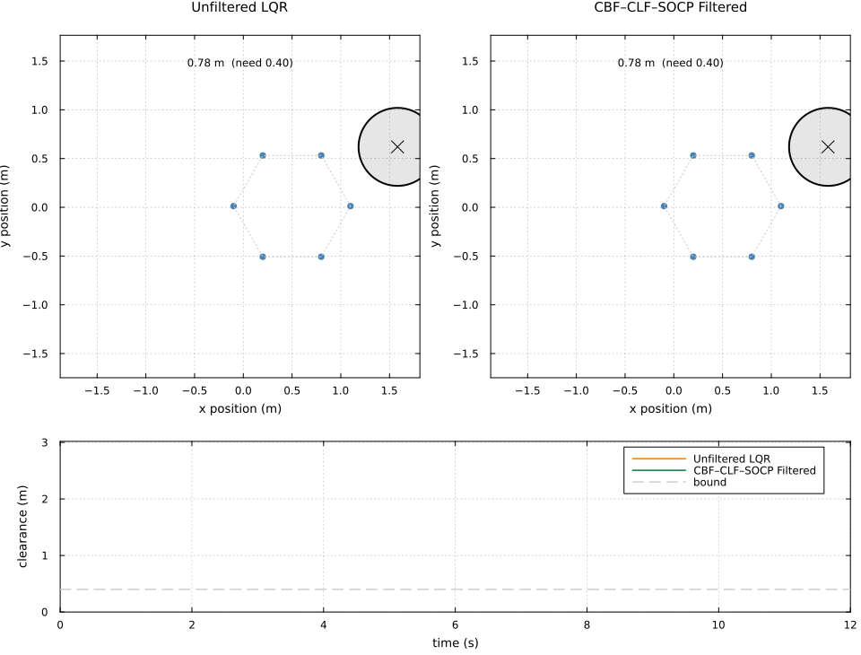
Validation
The four quantities the layered architecture is validated against: the actuator limit is respected, the Lyapunov function decays, no agent enters the keep-out radius, and the formation recovers once the barrier releases it.
plot(plot(baseline.rollout, :clearance; title = "Clearance, Unfiltered"),
plot(filtered.rollout, :clearance; title = "Clearance, Filtered");
layout = (1, 2), size = (900, 340))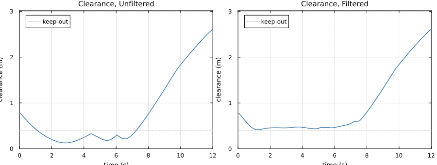
plot(plot(filtered.rollout, :command), plot(filtered.rollout, :lyapunov);
layout = (1, 2), size = (900, 340))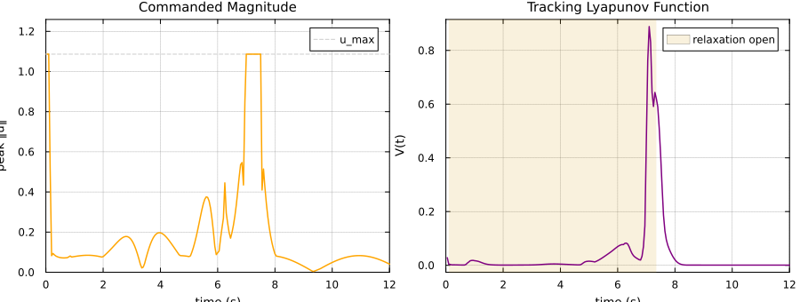
\[V\]
rises during the encounter, and the relaxation $\delta$ is what accounts for the size of that rise. It is worth being exact about which statement is certified, because a weaker one is easy to assume. What the filter enforces is the inequality $\dot{V} \le -c_3 V + \delta$ at each sample instant, and that is what the test suite checks directly, to $10^{-6}$, against a finite difference of the reference the controller actually tracked.
The sampled inequality does not imply that the discrete sequence $V(k)$ is monotone wherever $\delta$ is closed, and it is not. The command is held over the period while the reference filter keeps integrating, so $V$ can tick up across a step on which the sampled inequality held with $\delta$ at its floor. Those upticks are numerous and individually tiny. What tracks $\delta$ is the magnitude rather than the count, so that is what is measured: the share of total growth in $V$ occurring while the relaxation was open, and how the largest rises are distributed.
let V = filtered.lyapunov_agent, δ = filtered.slack_agent
rises = [(V[k + 1, i] - V[k, i], δ[k, i])
for i in 1:NA for k in 1:(ESTEPS - 1) if V[k + 1, i] > V[k, i]]
total = sum(first, rises)
opened = sum(first, filter(r -> last(r) > 1e-2, rises); init = 0.0)
ranked = sort(rises; by = r -> -first(r))
decile = ranked[1:max(1, length(ranked) ÷ 10)]
@printf("share of all growth in V while δ was open: %.0f%%\n", 100 * opened / total)
@printf("largest decile of rises with δ open: %.0f%%\n",
100 * count(r -> last(r) > 1e-2, decile) / length(decile))
@printf("largest single rise: ΔV = %.3f at δ = %.2f\n", first(ranked[1]), last(ranked[1]))
@printf("median δ off the rising steps: %.1e (the O(1/p) floor)\n",
median([δ[k, i] for i in 1:NA for k in 1:(ESTEPS - 1)
if V[k + 1, i] <= V[k, i]]))
endshare of all growth in V while δ was open: 98%
largest decile of rises with δ open: 80%
largest single rise: ΔV = 0.312 at δ = 0.76
median δ off the rising steps: 5.8e-05 (the O(1/p) floor)
What forces $\delta$ open is the speed of the reference rather than any constraint at the agent. The governor deflects the reference to clear the obstacle, and once it moves faster than the commanded decay rate can absorb, no admissible command satisfies $\dot{V} \le -c_3 V$ and the row is relaxed rather than violated. The agent's own program carries no barrier row at all — collision avoidance lives upstream in the governor — so nothing here is safety overriding stability at the agent; it is a tracker being handed a target that outruns its certified rate.
Away from the encounter $\delta$ falls back to the $O(1/p)$ floor printed above, which is the inexactness of a quadratic penalty rather than a genuine conflict, and $V$ decays.
plot(filtered.rollout, :relaxation)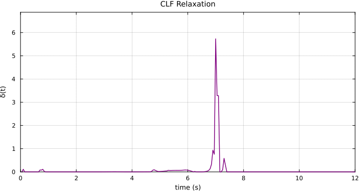
When the filter cannot certify
Barrier rows are hard, so the feasible set really can be empty, and every claim above rests on the filter saying so rather than returning a command it cannot stand behind. That is worth exhibiting rather than asserting.
Two agents are placed inside the keep-out radius, where the barrier no longer asks the command to maintain separation but to actively restore it. Recovering at the rate $\gamma$ demands a command of at least $\tfrac{\gamma}{2}|h| / 2\|\Delta p\|$; below that the actuator cone and the barrier row have empty intersection and no admissible command exists.
breach_model = ControlAffineModel(2)
here, near = [0.0, 0.0], [0.5, 0.0]
keep_out, gamma_breach = 1.0, 6.0
h_breach = dot(here - near, here - near) - keep_out^2
demand = (gamma_breach / 2) * abs(h_breach) / (2 * norm(here - near))
@printf("inside the keep-out: h = %.3f, so the barrier needs ‖u‖ ≥ %.2f\n\n", h_breach, demand)
for cap in (0.5 * demand, 0.9 * demand, 1.5 * demand)
res = safety_filter((SafetyTerm(DistanceBarrier(keep_out); gamma = gamma_breach,
sense = 10.0), ActuatorTerm(bound = cap)),
FilterContext(breach_model, here, here, 2; others = [near]),
[0.0, 0.0])
@printf("cap %.2f certified %-5s command %s\n", cap, res.certified,
res.command === nothing ? "nothing" : "returned")
endinside the keep-out: h = -0.750, so the barrier needs ‖u‖ ≥ 2.25
cap 1.12 certified false command nothing
cap 2.02 certified false command nothing
cap 3.38 certified true command returned
The command is nothing exactly when the certificate fails, which is the contract: a caller must supply its own fallback and cannot treat an uncertified instant as safe. The escort loop above holds the reference still; the swap loop commands zero acceleration, which for a double integrator means coasting — a reminder that the fallback is a control decision in its own right, and that for a coasting plant it is not a safe one.
One honesty note about the diagnosis. result.status reports that the solve did not produce a certifiable point, not why. A genuinely empty feasible set and a solve that merely failed numerically both surface the same way, so the status should not be read as an infeasibility certificate.
What one solve costs
Every agent solves one of these per control period. The measurement is of the whole filter — building the rows, encoding the conic program, solving it, and certifying the result — for a governor-shaped instance with four neighbours in range.
function median_microseconds(terms, ctx, u_nom)
result = @benchmark safety_filter($terms, $ctx, $u_nom) samples = 300 evals = 1 seconds = 4
return median(result.times) / 1e3
end
bench_ctx = FilterContext(ControlAffineModel(3), zeros(3), [1.0, 0.2, 0.0], 3;
others = [0.9 .* [cos(2π * j / 4), sin(2π * j / 4), 0.0]
for j in 1:4])
bench_nominal = [2.0, 0.5, 0.0]
bench_terms = (StabilityTerm(rate = 3.0),
SafetyTerm(DistanceBarrier(0.4); gamma = 4.0, sense = 10.0),
ActuatorTerm(bound = 1.4))
for (label, terms) in (("stability", (bench_terms[1],)), ("safety", (bench_terms[2],)),
("actuator", (bench_terms[3],)), ("all three", bench_terms))
@printf("%-12s %7.1f µs\n", label, median_microseconds(terms, bench_ctx, bench_nominal))
endstability 117.8 µs
safety 120.1 µs
actuator 87.7 µs
all three 238.9 µs
At the escort's own control period of 50 ms this is well under one percent of the budget, so safety here is not bought with computation.
What this establishes, and what it does not
The filter enforces its three families exactly as posed, and the composition preserves all three. Four limits are worth stating plainly.
The certificates are continuous-time; execution is discrete. $\dot{h} \ge -\gamma h$ is imposed at sample instants and integrated with a zero-order hold, so every reported $h \ge 0$ is measured rather than implied. Closing the gap needs a sampled-data argument with an explicit margin.
Safety is certified for the reference, not the state. The governor holds its own barrier essentially exactly; the realised clearance differs by the tracking error of the execution layer, which is why the governor is given an inflated radius. That inflation is currently a design parameter rather than a derived bound.
The two layers interact through the actuator cap. A cap that saturates the agents during ordinary tracking invalidates the transfer above: the tracking error stops being small and the reference certificate stops saying anything about the plant.
The relaxation never reaches exactly zero. A quadratic penalty is inexact, so the certified inequality is $\dot{V} \le -c_3 V + O(1/p)$.
The solve is dependable only while the relaxation stays small. Every instance on this page is certified, and the counts above are printed so that this can be checked rather than assumed. That is a statement about these scenarios, not a general guarantee. Asking for a decay rate the actuator cone cannot deliver drives $\delta$ large, and a large relaxation makes the KKT system badly conditioned: swept across such a regime, the solve fails at isolated parameter values whose neighbours succeed, and its sensitivity to the Uzawa augmentation of safety_filter_settings is not monotone. The practical rule is to keep the demanded rate within reach of the cap — lyapunov_rate reports what the nominal gain can actually witness — and to treat an uncertified result as a real operational case rather than a formality.